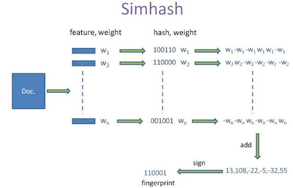
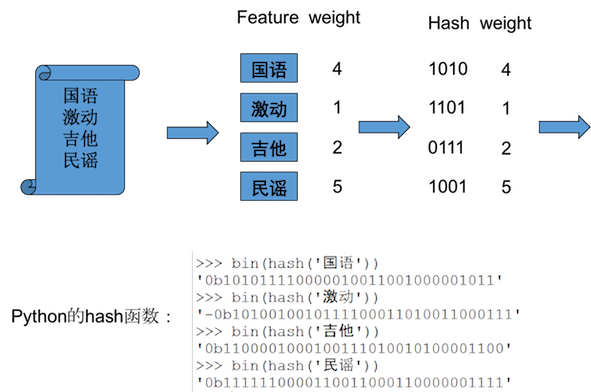
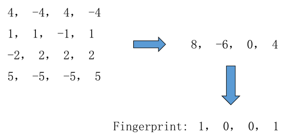

LSH
LSH主要有simhash和minhash
simhash-Problem
有很多网页，需要做很多网页的比较工作，工作量很大，如何减少工作量？
simhash-Try to solve
- 方案一：将网页直接hash？
能够比较两个网页是否完全相同，不能计算出相似程度。 - 方案二：计算cos距离？
有N个网页，每个网页M个词语，复杂度为O(NNM)，计算量太大。
simhash-思路
将网页hash成为一个K位的值，并且网页越相似，hash值越相似，即simhash。
simhash-解决方案

simhash-解决方案

simhash-解决方案

Why
- 试着做很小的修改？ 很难影响fingerprint。
- 权重越大？ 对fingerprint的影响越大。
- 尝试：让权重=TF-IDF值
Simhash 替代 hash？
不可，破坏了hash要求的随机性。
签名：容易错误。